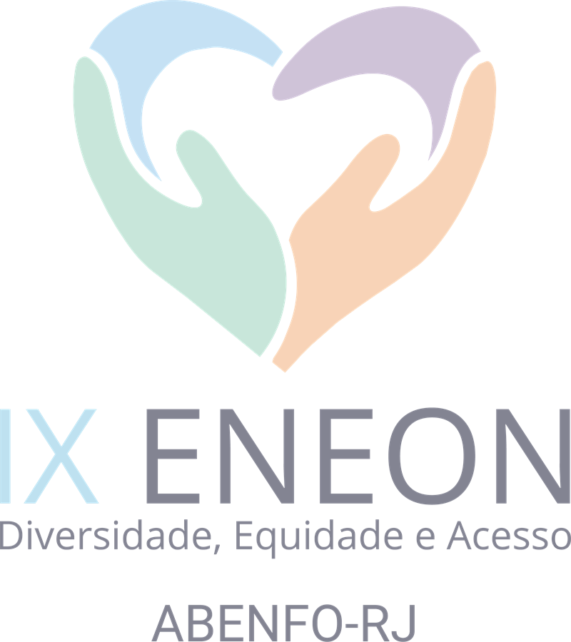
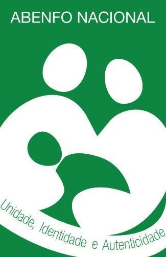
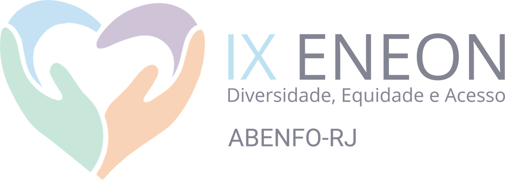
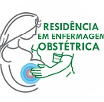
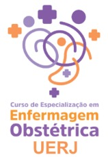
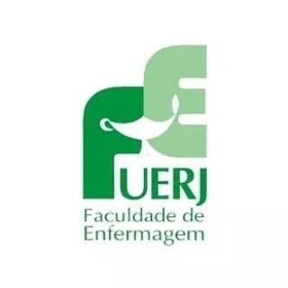
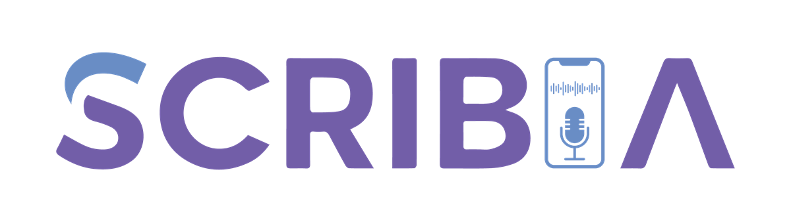

Programação Científica
Diversidade, Equidade e Acesso
15, 16 e 17 de julho de 2026
UERJ · Rio de Janeiro — RJ
Realização
Apoio


Diversidade, Equidade e Acesso
15, 16 e 17 de julho de 2026
UERJ · Rio de Janeiro — RJ

| Sala | Curso | Ministrante | Instituição |
|---|---|---|---|
| Manhã · 08h às 12h · Faculdade de Enfermagem da UERJ | |||
| Sala 716 | Punção venosa neonatal com realidade aumentada (VeinViewer®) | Profª Drª Adriana Teixeira Reis | UERJ |
| Espaço Raquel Haddock Lobo | Manejo da HPP em cenários não hospitalares – Estabilização e Transporte Seguro | Profª Ma. Anna Christina de Almeida Porréca | UERJ |
| Sala 23 · Pav. Nalva Pereira Caldas | Interpretação de Laudos Ultrassonográficos em Obstetrícia | Prof. Me. Reginaldo Lemos Soares | IGE |
| Tarde · 13h às 17h · Faculdade de Enfermagem da UERJ | |||
| Sala 716 | Manejo Clínico dos Traumas Perineais associado à Laserterapia | Profª Drª Ana Luiza Zapponi | Prof. Liberal |
| Sala 606 | Termoproteção do Recém-nascido | Prof. Dr. José Antônio de Sá Neto | UERJ |
| Espaço Raquel Haddock Lobo | Atualização em procedimentos de reconstrução perineal e segurança farmacológica | Profª Ma. Anna Christina de Almeida Porréca | UERJ |
| Sala 23 · Pav. Nalva Pereira Caldas | Avaliação do RN em sala de parto e aplicação de Escalas para Exame Físico | Profª Ma. Michele de Lima Janotti Quaresma | UERJ |
Cursos paralelos com inscrição específica — cada participante escolhe um curso por turno. Manhã: 08h às 12h · Tarde: 13h às 17h.

15/07/2026| Horário | Atividade | Responsável | Local |
|---|---|---|---|
| Manhã · 08h30 às 12h | |||
| 08h30 | Abertura OficialSolenidade de abertura com a mesa de autoridades (composição abaixo) | Mesa de autoridades | Capela Ecumênica |
| 11h00 | Conferência de AberturaCuidado perinatal especializado: impacto na qualidade e segurança da atenção materno-infantil | Conferencista: Profª Drª Marilanda Lopes de Lima | Capela Ecumênica |
| Horário | Atividade | Responsável | Local |
|---|---|---|---|
| Tarde · 13h às 17h · Apresentação de Trabalhos | |||
| 13h às 17h | Apresentação de TrabalhosSessões orais e pôsteres · distribuição por eixos temáticos a confirmar | Coordenação: Profª Drª Débora Chaves e Profª Ma. Anna Christina de Almeida Porréca | a definir |
Sessões orais simultâneas, organizadas por eixo temático. A distribuição por sala e horário será divulgada na página de trabalhos aprovados.
| Debate | Tema em debate | Debatedor(a) | Instituição |
|---|---|---|---|
| Painel 1 — Violações aos direitos das mulheres e dos recém-nascidos · 09h00–10h45 · Capela Ecumênica | |||
| Debatedor 1 | Violência obstétrica: atualidades sobre os caminhos para a tipificação deste crime e a construção do conceito | Exmª Srª Juíza Mariana Moreira Tangari | TJRJ |
| Debatedor 2 | Caminhos da implementação de políticas públicas de saúde na garantia do acesso ao cuidado | Enfª Ma. em Saúde Materno-Infantil Angela Mitrano Perazzini de Sá | GSM |
| Debatedor 3 | Direitos dos recém-nascidos no Brasil | Enfª Profª Drª Adriana Teixeira Reis | UERJ |
| Painel 2 — Segurança no cenário do cuidado obstétrico e neonatal · 11h00–13h00 · Capela Ecumênica | |||
| Debatedor 1 | Parto Domiciliar Planejado | Enfª Profª Drª Heloisa Lessa | Casa Colo Acolhimento Familiar Ltda. |
| Debatedor 2 | Casa de Parto | Enfª Ma. Simone Pereira dos Santos | Diretora da Casa de Parto David Capistrano Filho |
| Debatedor 3 | Maternidade hospitalar de natureza pública | Enfª Ma. Renata Alves de Lima Nunes Barbosa | Superintendência de Atenção Primária — Secretaria Estadual de Saúde |
| Debatedor 4 | Maternidade hospitalar de natureza suplementar/privada – ANS | Enfª Profª Drª Jacqueline Alves Torres | Agência Nacional de Saúde Suplementar |
| Painel 3 — Trabalho em equipe e competência para o cuidado no caminho da formação-intervenção-avaliação: ampliando redes institucionais para a mudança de modelo · 14h00–16h00 · Capela Ecumênica | |||
| Debatedor 1 | CEEO – Rede Alyne | Profª Drª Claudia Maria Messias | UFF |
| Debatedor 2 | Residência em Enfermagem Obstétrica | Profª Drª Midian Oliveira Dias | UERJ |
| Debatedor 3 | Residência em Enfermagem Neonatal | Profª Drª Marcele Sampaio de Freitas Guimarães Ribeiro | UERJ |
| Debatedor 4 | Residência Multiprofissional em Saúde da Mulher — HESFA/UFRJ | Enfª Ma. Isabelle Mangueira de Paula Gaspar | HESFA/UFRJ |
| Encerramento · 16h00–17h00 | |||
| 17h00 | Apresentação musical de Encerramento | Profª Ma. Anna Christina de Almeida Porréca · Prof. Dr. Rubem Figueiredo Sadok Menna Barreto | Capela Ecumênica |
Todos os painéis acontecem na Capela Ecumênica, no campus da UERJ. Mediação/coordenação de cada painel a confirmar.
Presidente: Profª Drª Marcele Zveiter
Vice-Presidente: Profª Drª Sabrina Seibert
Coordenadora: Profª Drª Débora Cecília Chaves de Oliveira
Vice-coordenadora: Profª Ma. Anna Christina de Almeida Porréca
Coordenadora: Profª Drª Midian Oliveira Dias
Coordenadora: Profª Ma. Michele de Lima Janotti Quaresma
Coordenador: Prof. Dr. Alan Messala de Aguiar Britto
Colaboradora: Acd. Enf. Ana Beatriz Morais
Coordenadora: Profª Drª Sabrina Seibert




Cobertura digital do IX ENEON realizada pelo ScribIA — áudios, Livebooks e materiais digitais.
www.scribia.com.br